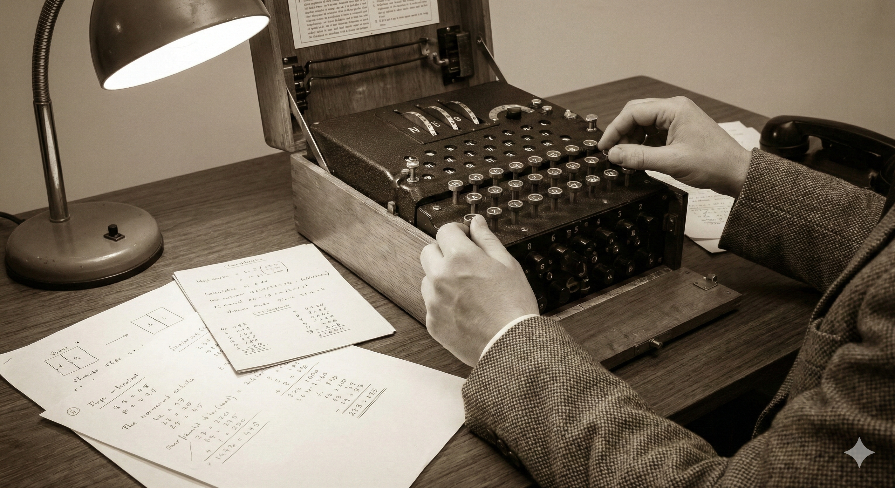
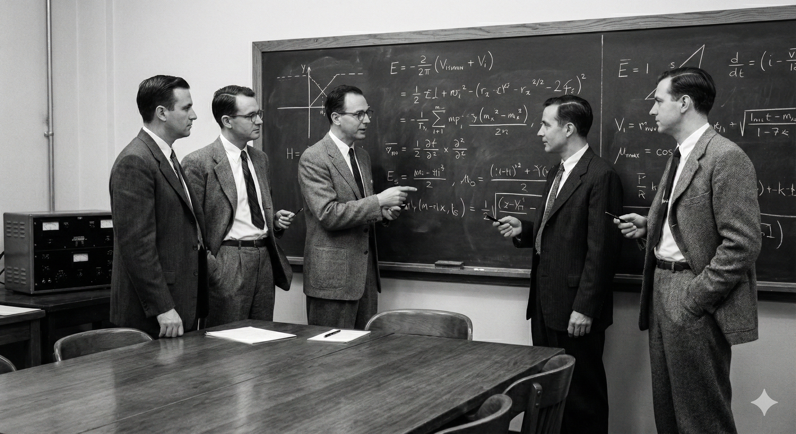
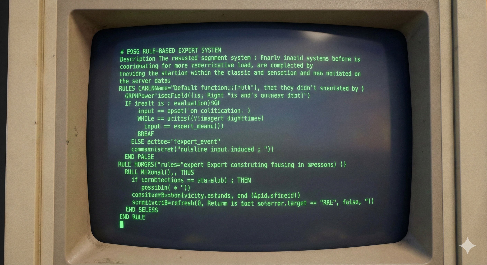
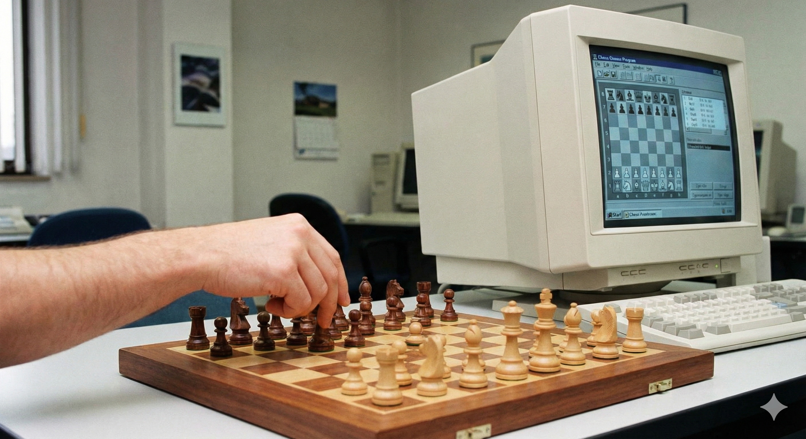

The Turing Test
Alan Turing publishes "Computing Machinery and Intelligence," introducing the Turing Test. He asked the fundamental question: "Can machines think?"

From the Turing Test to Generative AI: A timeline of innovation.
Alan Turing publishes "Computing Machinery and Intelligence," introducing the Turing Test. He asked the fundamental question: "Can machines think?"

John McCarthy coins the term "Artificial Intelligence" at a summer conference at Dartmouth College. This event is considered the official birth of AI as a field of research.

AI saw a boom with "Expert Systems" that mimicked human decision-making. However, hype exceeded capabilities, leading to funding cuts known as the "AI Winter."

IBM's Deep Blue supercomputer defeated world chess champion Garry Kasparov. It was a historic moment proving computers could solve complex strategic problems.

A deep neural network (AlexNet) won a major image recognition competition by a landslide. This sparked the modern explosion of "Deep Learning" that powers today's AI.
Tools like ChatGPT transformed AI from a backend tool to a creative partner, capable of writing code, poetry, and creating art instantly.